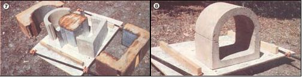

(PHOTOS BY BOB CHRISTENSEN)
[7] One week later, after the refractory clay has set, the forms can be removed. [8] One part of the room oven's finished body. . . which must be damp-cured, then sun-dried for two or three weeks.